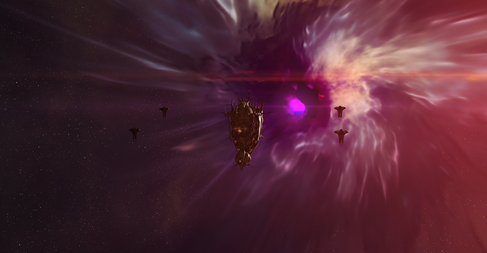

Docking bay 2K30606R
Jita 4-4, Jita, Kimotoro, The Forge
The beating heart of New Eden.
This is where the voyage begins.
Editor's note:
On the left, you will follow the journal of a voyager, taken during the Sightseeing on the path of Katia Sae, Mild Thrill Experience.
On the right, you will follow the host for the Sightseeing on the Path of Katia Sae, Mild Thrill Experience, Cetlyn Montanier.
Homeworld: Colcer VIII
Her favourite stop: The Cord of the Elements
Born into the never ending seas of Colver VIII, Cetlyn was a born swimmer but history called her to the stars. She moved to Dodixie to pursue a degree on Contemporary History of Null Security Space at the University of Dodixie and she graduated with a thesis on the “The history of the size of conflicts in Null Security space. How war had grown from a regional scope up to a cluster wide scope”.
As a matter expert on wars in Null Security space, she has all the knowledge to guide our guests through the depths of Null Security space in the Maximum Thrill Experience.
The shuttle sat silently on its berth. The hull was a Caldari standard design, but it had been modified by Sawa Laboratories crews to provide a better view from the passengers’ compartment with floor to ceiling viewports, extra comfort seats and advanced projector technology. The livery was dark but for a pair of orange stripes, inconspicuous and simple.
The crew was preparing it for the upcoming trip. The last supplies were loaded and the cleaning crews left the ship interiors in pristine conditions. Everything was ready to welcome the guests aboard.
The Voyage could begin.
System: Jita
Constellation: Kimotoro
Region: The Forge
Security Status: 0.9
I bought into the Maximum Thrill Experience… I hope I won't regret this.
They promised sights and thrills and also reassured me it was going to be… mostly safe. It’s that mostly that worries me.
We are boarding. If I was queasy for the Mild Thrill Experience… now I’m more queasy.
Breath and keep calm dear, breath and keep calm… but how I can be calm when I know we are diving into the sharks’ tank?! And the tales says this kind of sharks have many teeth and are always hungry… finger crossed we make it through all in one piece!
This time around it’s going to be a bit longer since we are practically taking a long long clock wise run through Null Security Space, meaning we will be out in the dark for a pair of days. Double queasy…
At least the service is no less top of the line. The drink is very sweet. Also, we are going to stop by the monuments of the biggest battles New Eden had ever seen… oooooohhh yes!
And we are on our way! The Voyage has officially began!
"Welcome everyone! New Eden Voyages is happy to welcome you on board the NEV Voyager II."
"My name is Cetlyn and I'll be your host for this voyage. Be ready to be amazed and have an experience that you won't forget!"
"We are preparing to leave Jita 4-4 and we will be soon on our way. While we wait, I and the whole crew would like to wish you a pleasant stay."
"If you have any question or concern, please reach out to our staff, we will be happy to help."
Once everyone was on board and the ship was sealed, the shuttle began its undocking operations. It slowly rose from its berth before it headed for the busy access corridor. The movements were smooth and the guests barely felt the change of vibrations under their feet.
Refreshments were distributed but not so many gasped and turned in awe as they exited the massive station. This voyage was for the people that had seen Jita 4-4 before, the gasps and thrills laid ahead of them. Nonetheless, the shuttle was right in the thick of the crowded space around Jita 4-4: massive ships, from cargo to battle ones, loomed as it sped away, heading for the Perimeter gate.
System: D-B7YK
Constellation: 6-V49K
Region: Syndicate
Security Status: -0.05
Now, where do I sign up for those retreats? This is probably the best view of all the tours I took!
This burning light cutting through those orange clouds… and that little spot of the green blue on the side… we are always so focused on ourselves and sometimes we miss the beauty of nature and how… impressive it can be.
The station is a station, nothing particularly fancy about it, but the sight of this small station, so small compared to the moon beside it, and the Cord of Elements in the background, kind of puts into perspective our true size. At least compared to the one of the Universe at large.
Next stop M2-XFE!
"Dear guests, we just entered the D-B7YK system and we are en route to the Syndicate Executive Retreat Center and the Cord of the Elements."
"This is the Syndicate Executive Retreat Center, a retreat for the elite of Syndicate. A handful of jumps away from Poitot, the retreat has a unique and breathtaking view on the Cord of Elements."
"A super-dense dark cloud, the Cord of Elements is believed to be the result of two black holes colliding millions of years ago, leaving a long lasting scar in the fabric of space. While traveling any closer is considered to be impossible, even from afar it presents an unique sight."
The shuttle lined up toward the next gate but lingered, letting the guests fully take in the spectacle of the Cord of Elements. They were in a pocket of calm and, after that stop, there would be no turning point. They would head into the depths of Null Security space, heading south, then east to end in the far north, for an experience like no other.
When the time to linger was past, the shuttle sped toward the 3-IN0V gate. A few jumps and they headed into Cloud Ring, home of the ORE Corporation. Refreshments were served as Fountain passed by. Delve was coming closer and closer. They encountered a fleet, a mix of frigates and destroyers hanging on a gate, but the shuttle was quick to depart, M2-XFE was waiting.
System: M2-XFE
Constellation: NJU-QV
Region: Delve
Security Status: -0.37
Silence.
It’s… chilling how capsuleers can throw so many resources into holding a single point in space. And the outcome? In doubt.
And to think that so many crews got spent out here, away from everyone, fighting in a war of the gods. In moments like these capsuleers do feel like gods, capricious and yet infinitely powerful.
It’s hard to imagine how people on those ships must have felt, jumping into the fire of doomsdays, knowing they were probably already doomed, even before entering the fray.
I’m kind of grateful I live where Titans are a rare sight and even rarer are battles.
By the way, just me think that the monument looks like a giant alien ship with 2 arms, a tail and big… cold… blue eye… peering into your soul?!
Too much imagination… I guess.
Next stop 6QBH-S!
"Dear guests, we just entered the M2-XFE system and we are en route to the Massacres at M2-XFE Monument."
"A monument to the capsuleer war might and determination. This monument celebrates the resting place of 450 titans and over 20,000 other vessels in one of the biggest battles New Eden had ever seen."
"Part of the opening act of one of the many wars fought between warmongering capsuleers empires, the Battle of M2-XFE wouldn’t have made the news if it hadn’t been one of the costliest ever: in the first twelve hours, 250 titans were lost to fiery doomsdays and, as the battle raged on for several days, more piled up."
"But who won? It is hard to say. Both sides claimed victory and yet the toll on both sides was massive. The defenders ultimately lost the control of the system but made the attacking forces pay a dire price."
"The monument honors the pilots and the crews who sacrificed and fought for what they believed in."
The shuttle cruised slowly around the monument. To many, it felt like it had an organic, insect-like feeling, with its staggered surface and those two arms opening to embrace the central sphere of blue light. It was a unique monument for a unique battle.
The shuttle didn’t linger longer than necessary, it was an active area of space and, as such, they couldn’t attract attention. They turned for KEE-N6 heading for Stain, heart of the Sansha’s Nation.
A full meal was served and this time, the starred Chef went to mix the cuisine of Delve, reminiscing of its Amarrian roots, with the edgy and experimental tastes of a place like Stain, where the Empires were far away and the life was twisted in new directions.
The shuttle bounced between Delve and Querious, then it headed south toward Period Basis before entering Stain. It didn’t take long to see the spiked ship of the Sanshas hanging on gates and guarding stations. This was the nation of the Sansha.
System: 6QBH-S
Constellation: W-ULNA
Region: Stain
Security Status: -0.25
That was… a challenging meal. It had some strange flavours… an experience in itself.
I’m on the edge of my seat, I don’t want to end up a Sansha’s drone, I still like my humanity, thank you! Those spiky ships are scary, they feel so inhuman.
And I guess the Pool of Radiance is perfect for the Sansha: crazed and… inhuman? Can a giant maelstrom with a bright purple light in the middle be called inhuman? That purple light is like nothing I have ever seen, it’s purple. Like bright neon purple.
I wonder what the cloud and the purple light hide. And the spiky Sansha are in the middle, but I don’t blame them: I’d study the Pool of Radiance as well if I could.
Next stop C9N-CC!
"Dear guests, we just entered the 6QBH-S system and we are en route to the True Creations Pool of Radiance Research Lab."
"The Pool of Radiance, a one of a kind space phenomena which had been mesmerizing travelers through the ages."
"We don’t know what generates that purple light. Difficulty in travels of all kinds had limited any long term research on the Pool. We don’t know if the Sansha’s Nation had made any progress either. What we know is that it is a unique, prized sight after an arduous journey."

The shuttle hung way out of reach of the Sansha’s Nation outpost. No one on board had any interest in becoming nice and close with Sansha Kuvakei himself and, everyone was just as happy to enjoy the unobstructed sight of the Pool of Radiance provided by the camera drones.
At long last, the shuttle headed for U6-FCE. They went through Stain, seeing other Sansha ships hanging around gates, but not once, they were stopped before they headed into Esoteria. Refreshments were served as the Sansha’s Nation was left behind and their new stop loomed ahead.
System: C9N-CC
Constellation: 8T-OLH
Region: Esoteria
Security Status: -0.31
The first.
We are in the presence of the first Titan built by capsuleers. Or at least of its wreck.
Apparently it didn’t do much aside from dying in a blaze of fire. But it did change the history of war out here. We also need to remember this is a tomb for most of the crew which is sobering.
How can a Titan be called ‘Steve’, tho?
Next stop Titanomachy!
"Dear guests, we just entered the C9N-CC system and we are en route to the Steve Memorial."
"Steve. The first of its kind. The first to be born and the first to die."
"Steve was the first Titan to ever be built by capsuleers. A massive endevour for the time and one that would change how wars were fought forever."
"Built in the depth of Esoteria to hide it away from prying eyes, it is not clear how its demise came. It could have been due to capsuleer error, due to technological breakdown, or due to some sort of corporate conspiracy but what is sure is that the ship didn’t see another day."
"The wreck that claimed nearly nineteen-thousand crew members still burns to this day, a funerary pyre to the first of its kind."
The shuttle orbited the giant wreck. Guests could see the fires still burning deep into the once proud ship. It was a sobering sight, even if it was smaller than the M2-XFE battlefield. Physically smaller, yes, but not less small in terms of what had happened and what had been lost.
Once the time was up, the shuttle headed for the X-7BIX gate. They were halfway through the Voyage but much was yet to be traveled. They had reached the southern point of their Voyage and now it was time to head further east.
To ease the underlying stress that ran through the guests, the crew was quick to serve another full meal. This time, the starred chef chose to play with what they had left, touching on the refined Syndicate cuisine and the Delve bloody one, and with what they had in front of them, touching on the Insmother remoteness cuisine and the lawlessness cuisine of pirate infested Venal.
It was a relaxing moment as, outside, they moved from the dusty, rusty colors of Esoteria into the green sea of Immensea.
System: B-R5RB
Constellation: Y46-EN
Region: Immensea
Security Status: -0.71
Why systems out of here are all these strings of letters and numbers that are hard to pronounce? Anyway, after seeing M2-XFE these other monuments and battlefields feel… small.
However, if I put them into perspective when they had happened… for the time they must have had a huge impact on people. Such an impact that we still remember it today.
11 trillion ISK is like… more money that I can imagine! It’s more than a HUGE amount of money… it’s… A LOT. And it was “just” 250 titans. This must have been another fiery battle.
Next stop C-J6MT!
"Dear guests, we just entered the B-R5RB system and we are en route to the Titanomachy."
"Titanomachy, one the most expensive graveyards of New Eden. This is where, in YC116, an unpaid sovereignty bill triggered one of the most expensive battles ever."
"The staging area for one of the two capsuleer coalitions tied in a titanic confrontation, B-R5RB saw the fire of doomsdays and the thunder of cannons as capsuleers fought with all their might."
"21 hours of battle left 75 titans and countless smaller ships burning on the battlefield, totalling 11 trillion ISK. An amount that had never been seen before that fateful day."
The Titanomachy was a debris field littered with titans and bathed in the sun of the far away star. As such, the shuttle didn’t get too close, least to endanger its guests. It hovered a safe distance away, once again relying on projector technology and camera drones to give the impression to cruise right in the middle of those giant husks of once powerful ships.
Once the time was up, the shuttle aligned toward the O3Z5-G gate and entered another leg of the trip. As they headed for the eastern point of the Experience, they passed through Catch, Curse where they saw a few Angel Cartel pirates on traffic control duty, Scalding Pass, a quick fly by in Wicked Creek before they entered Insmother.
System: C-J6MT
Constellation: QA-P7J
Region: Insmother
Security Status: -0.29
People can be stubborn. These Red Alliance guys must have been very stubborn. They defended their home against all odds and survived to tell the tale. More than that, they managed to hold to their home system and psychologically win the war as well. What a feat.
It’s understandable I think. The same way I’d fight for my home, my planet, the same way these capsuleers had fought tooth and nail to defend the one place they called home.
Honor to them.
However the monument is vaguely kind of creepy… like an ancient alien turned to stone. Just a feeling, probably it’s just the stone and the red light.
Next stop ZH3-BS!
"Dear guests, we just entered the C-J6MT system and we are en route to the A History of War monument."
"We are at an ancient time, before the Titans and their weapons of mass destruction, a time when dreadnoughts ruled the battlefields. C-J6MT was the home to Red Alliance, at the time one of the biggest sovereignty holders. They had enemies and those enemies were on a path of destruction."
"The Coalition of the South waged war, they took system after system, their hunger insatiable but when they reached C-J6MT they stopped."
"Red Alliance, outnumbered six to one and just as outgunned, held to this system, vowing to never lose it. It was their home and they would fight for it."
"Days passed by and, with guerrilla tactics, Red Alliance held. It dragged on and yet they didn’t yield, till it was their enemies that yielded. The will to fight was lost, the Coalition of the South retreated, leaving the system in the hands of those who had fought to the last stand."
A towering, vaguely cross shaped stone monument, the red hues of the stone and the red light coming from the inside called to the Red Alliance that defended that very system to the last man. It was a testament to the stubbornness and courage of men made gods.
After a few slow orbits, the shuttle turned toward YPW-M4 and they headed for the north. It was a long leg, one that saw the shuttle leave the south, cross through the east, even coming a smatter of systems away from Jita, and reach Tenal, one of the northernmost regions of the cluster.
It was time for a full meal as much as for a rest. The starred chef chose to play with the contrast of southern and northern cuisine, bridging them with the eastern touches that spoke of remoteness, of Caldari grey and Minmatar rusty brown.
Many guests choose to rest once the meal was done. They hadn’t moved from the passenger compartment and yet, the long journey, as much as the lingering fear of Null Security space, took its toll. The shuttle sped north, past massive capsuleer stations and empty systems. Up north, toward Tenal and the crazy Gurista pirates.
System: ZH3-BS
Constellation: 09-4XW
Region: Tenal
Security Status: -0.09
I needed that long nap. I totally needed it. I wanted to stay up but my body chose otherwise. At least I woke up where I fell asleep, in my very comfortable seat on the Voyager II. That’s already a success!
Anyway, we are into the land of the Rabbit, the land of Guristas pirates! Crazy bunch, if you want my opinion. I just hope no crazed rabbit comes looking for our blood. (Now I feel haunted…)
Pioneer’s Sanctuary is a small cluster of buildings in between two oblong asteroids. We are not alone as we cruise closely: other ships are berthed there. There is even a… dreadnought?! What is a Phoenix dreadnought doing out here?!
Apparently they are Caldari representatives… in Gurista space… when you say the courage… At least that’s what Cetlyn told me.
It’s rather cute, in the way a bunch of asteroids and modular buildings hanging in space can be.
Next stop Jita!
"Dear guests, we just entered the ZH3-BS system and we are en route to the Pioneer’s Sanctuary."
"A bustling port in the depths of Null Security space. This is the Pioneer’s Sanctuary, a port built by ambitious gas harvesters to exploit the region’s gas resources."
"Under the perennial threat of the deadly Guristas Pirates controlling the region, the Sanctuary had managed to survive and thrive, calling on to many different people. It now represents a stopping point for freelance harvesters and mercenaries from all over New Eden."
The shuttle took a respite in the relative safety of the Sanctuary before it turned and headed for the 1QH-0K gate. At long last, they entered the last leg of the Voyage.
Not everyone could relax, they were still cruising through dangerous territory but the last full meal of the Voyage distracted many guests. The chef had worked hard to build an experience of cuisine that called for the remoteness of Tenal, the rebelliousness of Venal and the frontieresque of Tribute. A fitting last meal for the last leg of the Voyage, the one leaving behind the lawless space and bringing them back to safer space.
When they crossed back into High Security space, jumping into Oimmo, many took a breath of relief. They had done it: they had dived into Null Security space, resurfaced and got out alive. What an experience to boast with friends and relatives.
The closer the shuttle got to Jita, the greater the traffic become. The waits at the gates lengthened but also came the realisation that their voyage was soon to end. Jita 4-4 appeared on the horizon and that was their arrival station.
System: Jita
Constellation: Kimotoro
Region: The Forge
Security Status: 0.9
I’m… relieved to finally see the busyness of Jita… and god knows how happy I’ll be to finally step back onto its metal decks. I’m totally going to kiss them.
This Voyage had been… a lot. I knew it would be a lot from the start but it was… more, if you get what I mean. If I was worried I couldn’t get my heart pumping crazy, well, I now know I can do that.
I felt like I faced death right there and then those pair of times. Those gatecamps looked nasty and I feel like some unknown god up there, I don’t know if it’s the Amarr one or another one, looked down at us. We are so small and yet, we managed to get through with only a pair of close call. I consider myself lucky.
And then the loki… I totally felt like it tried to tail us but probably it was just on its way to its own things. Also, those Muninns out there… happy to have seen them from afar. Just as I’m happy to have seen the Sansha guys from very well afar (Those looked nastier than gatecamps if that’s possible). Thank you very much.
In the end, relieved to be alive, I say that this is an experience not for the faint of heart. I’m sure it’s made in a way that we get close to death but we don’t die, but it still feels like we are risking it at every jump.
Not sure I would do it again… I have a soft heart, you know!
Obviously now that I did 3, I’m tempted to complete the run doing 4 with the Extreme Thrill experience. Sigh! Why do I do this to me?
Until then,
see you.
~The Voyager
"Dear guests, we are nearing Jita 4-4. As you can see, the traffic around the greatest station of the whole cluster is thick. Jita 4-4 is renowed as the main market hub and, as such, it attracts people from all over New Eden."
"In its corridor, you will be able to find the most faithful of Amarrian side by side with the flashiest Gallente. Caldari business man trading with Minmatar clan representatives and through it all, the capsuleers, immortals in a mortal world. Not for nothing, Jita 4-4 is sometimes called the beating heart of New Eden."
"As we enter the station itself, I am sad to announce that we are at the end of our Voyage. We hope you had a pleasant Voyage and New Eden Voyages hopes to see you again soon."
"If you need more information on The Sightseeing on the path of Katia Sae or other offerings by New Eden Voyages, please, reach out to our ground staff. They will be happy to answer each and every one of your questions."
"I’m your host, Cetlyn, and I wish you a safe continuation of your journey."
~The Host, Cetlyn Montanier